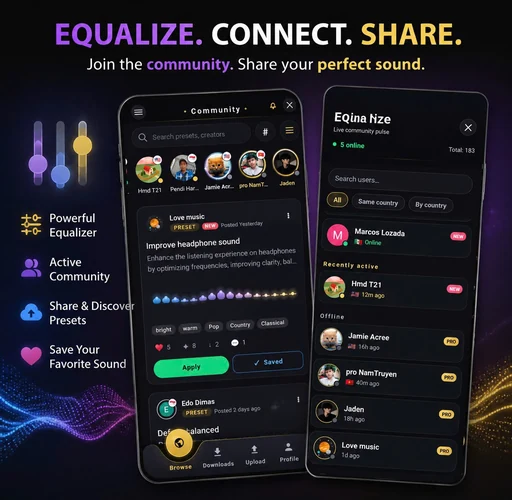
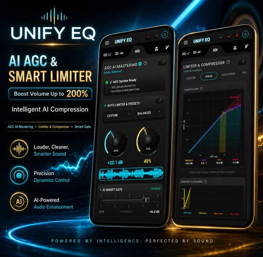
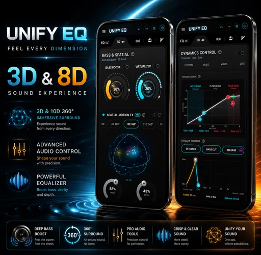
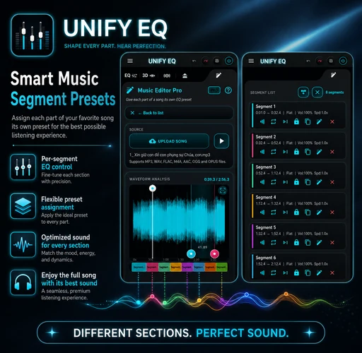
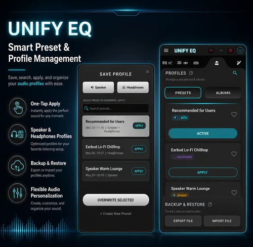
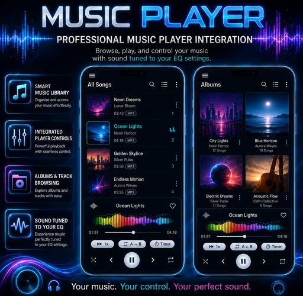
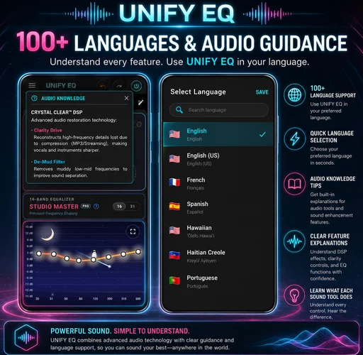

Live response
Frequency curve
LOW END31–125 Hz
BODY250–800 Hz
PRESENCE1–5 kHz
AIR8–16 kHz
UNIFY Equalizer Bass Booster turns Android into a complete sound studio: 16/31-band EQ, deep bass and volume boost, Crystal Clear™ DSP, AI mastering, dynamics control, immersive spatial audio, a local music player and a community for discovering and sharing presets.
A premium audio interface should make complex processing feel legible. UNIFY EQ separates tone, dynamics and spatial movement into a coherent signal path so every adjustment has a clear purpose.
Switch between fast 16-band control and detailed 31-band tuning. Build precise curves for headphones, speakers, genres or individual tracks.
Raise perceived loudness while preserving control through adaptive gain, multi-band compression, smart gate behavior and output limiting.
Recover definition, reduce muddy low-mid buildup and reveal detail without turning the interface into a maze.
Move beyond static widening with controllable 3D and 8D-style motion, virtualizer depth and real-time spatial visualization.

LIVE CREATOR PROFILES PRESETS READY TO APPLYGreat sound does not have to start from zero. Browse presets and time-based segment configurations created by other listeners, apply them to your setup, save favorites and publish your own sound for the community.
A visual tour of the complete Android sound workflow — precision equalization, mastering, spatial effects, segment automation, preset management, local playback and built-in audio guidance.







The app strings describe a much broader product than a basic bass booster. These are the high-value workflows that deserve to be visible to users and searchable by Google.
Browse all songs, albums, artists and genres; create playlists and favorites; edit tags, lyrics and album artwork without relying on a cloud music source.
Split one song into timed sections and assign a different equalizer preset to the intro, verse, chorus or drop. Save, import and export the full segment configuration.
Use A ↔ B repeat, playback speed, seek shortcuts, timestamp notes, smart queue modes and foreground playback controls.
Stop playback after a chosen interval, wake to a selected song or build recurring schedules for different days.
Create separate profiles for headphones and speakers, organize presets into albums, pin or duplicate favorites, then export or restore your complete setup.
Choose from more than 100 interface languages, use built-in audio knowledge explanations, switch themes and view real-time visualizers that make advanced DSP easier to understand.
Spatial audio in UNIFY EQ is treated as a designed effect, not a decorative toggle. Control depth, width and motion while keeping dynamics and equalization visible in the same system.
Download UNIFY Equalizer Bass Booster and start shaping bass, vocals, dynamics and spatial depth with professional control.